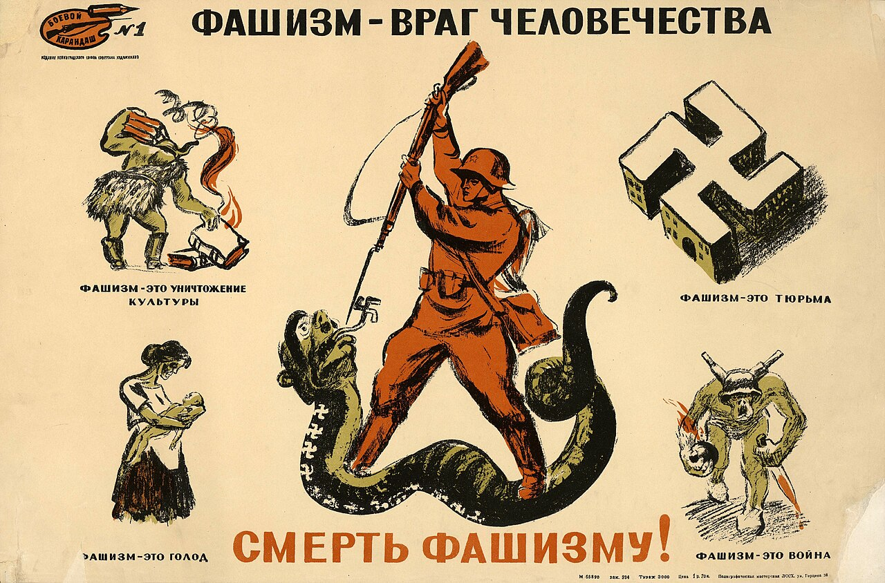
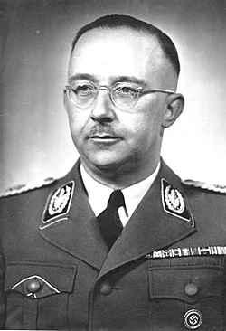
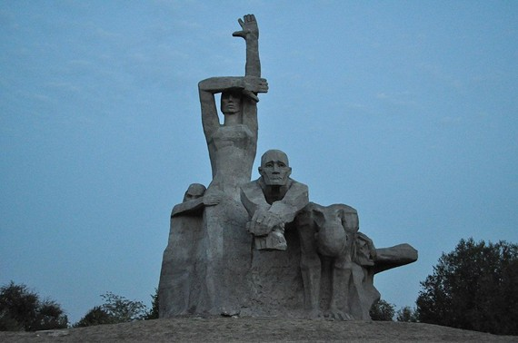
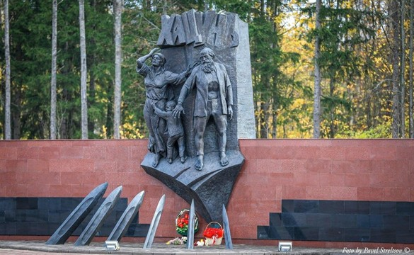
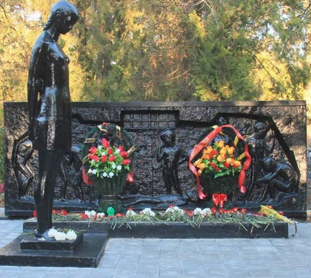
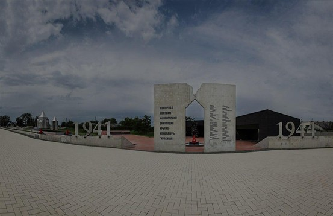
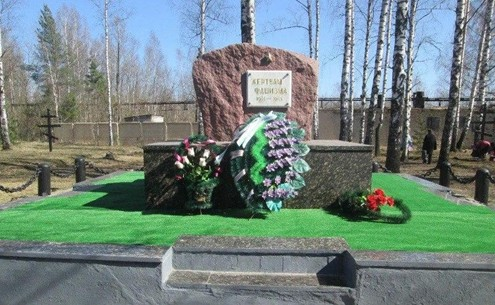
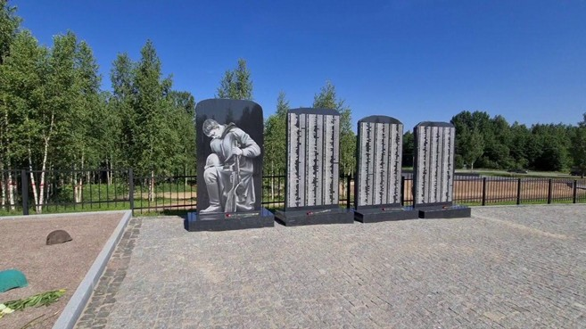
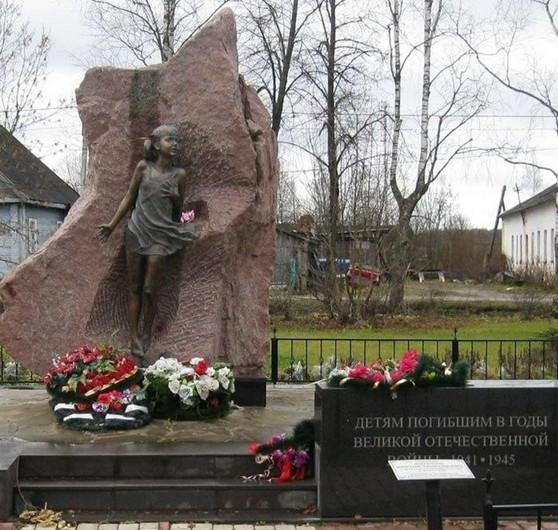
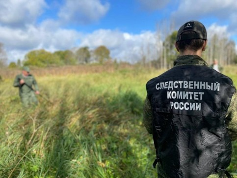

Хронология трагедий
Введение
Сохранение памяти о трагедии мирного населения СССР в годы Великой
Отечественной войны необходимо для осознания истинных целей
нацистской Германии и ее пособников. Военные действия на
оккупированных территориях были не только вооруженным
противостоянием, но и целенаправленной политикой уничтожения
гражданского населения, что позволяет рассматривать их как
преступления против человечества.
Актуальность работы
обусловлена необходимостью сохранения исторической памяти о жертвах
нацизма и противодействия попыткам фальсификации событий войны.
Изучение фактов геноцида позволяет за статистикой увидеть
человеческие судьбы и осознать масштабы трагедии народов СССР.
Цель
работы — изучение преступлений нацистов и их пособников против
мирного населения СССР и анализ деятельности по сохранению памяти о
жертвах. Задачи: рассмотрение положения мирного населения, анализ
форм нацистской оккупационной политики, изучение примеров военных
преступлений, характеристика современных исследований и мемориальных
инициатив, включая проект «Без срока давности».
Материалы
архивов и исторические исследования закрепляют правовую и
нравственную оценку нацистских преступлений как не имеющих срока
давности. Осмысление этого опыта подчеркивает ценность мира и играет
важную роль в формировании исторического сознания молодежи.
Политика геноцида: идеология и реализация
Мирное население в условиях войны
С первых дней войны мирное население СССР оказалось вовлечено в события наравне с армией. Граница между фронтом и тылом исчезла, а гражданские лица стали главными жертвами боевых действий и оккупационной политики. Миллионы людей столкнулись с бомбардировками, разрушением инфраструктуры и перебоями в снабжении. Эвакуация сопровождалась потерей имущества и разрывом семей. Особенно уязвимыми были жители прифронтовых и оккупированных территорий, где нехватка продовольствия стала повседневной реальностью. Женщины, дети и старики взяли на себя трудовую нагрузку в тылу, одновременно испытывая психологическое давление войны. Для оказавшихся под оккупацией жизнь превратилась в борьбу за выживание, однако население сохраняло способность к взаимопомощи.
Идеология нацизма как основа преступлений
Преступления против мирного населения СССР носили системный характер, обусловленный идеологией национал-социализма. Расовая теория оправдывала уничтожение «неполноценных» народов. Население СССР рассматривалось не как нейтральная сторона, а как объект истребления. Идеологические установки нашли отражение в директивах, таких как Генеральный план «Ост», предусматривавший радикальное сокращение славянского населения. Уничтожение мирных граждан было сознательной государственной стратегией. Нацистская пропаганда дегуманизировала советских граждан, снимая моральные ограничения с военных. Преступления против женщин, детей и стариков стали повседневной практикой оккупационного режима.

Генеральный план «Ост»
Преступления нацистов были реализацией политики геноцида. Её воплощением стал Генеральный план «Ост», разработанный под руководством Гиммлера. План предусматривал «освобождение территорий» от коренного населения. Для разных регионов устанавливались квоты на уничтожение и онемечивание: для Польши, Западной Украины и Белоруссии планировалось ликвидировать или депортировать до 85% жителей. Славяне рассматривались как «расово неполноценные». План включал методы реализации: карательные экспедиции, создание гетто, искусственный голод и депортации. Он закладывал основу для тотальной войны против гражданского населения, определяя методы управления на оккупированных территориях.

Потери среди мирного населения СССР
Потери мирного населения СССР стали одной из крупнейших гуманитарных катастроф XX века. Из 26,6–27 миллионов общих безвозвратных потерь СССР на гражданское население пришлось более половины — от 13,7 до 16,9 миллионов человек. Гибель происходила как в результате боевых действий, так и вследствие целенаправленной политики оккупантов. Около 7,4 миллиона советских граждан были преднамеренно уничтожены в ходе массовых расстрелов и карательных операций. Особое место занимает блокада Ленинграда, где от голода погибло около миллиона человек. Ещё одной формой потерь стал насильственный вывоз в Германию: около 5,3 миллиона человек были депортированы, многие погибли от истощения и болезней.
Формы и методы преступной политики нацистов
Террор и карательные акции
Оккупационный режим опирался на системный террор как инструмент контроля. Карательные операции проводились для подавления сопротивления и устрашения населения. Их ключевым принципом была коллективная ответственность: жители целых населенных пунктов подвергались наказанию за действия отдельных лиц. Акции включали публичные казни, массовые расстрелы, уничтожение деревень и депортации. Их проводили как подразделения СС, так и части вермахта. Методичность террора демонстрируют «зоны пустыни» и сожженные деревни в Белоруссии и на Украине, где уничтожались все жители. Помимо военного эффекта, террор имел экономическую цель: лишая население средств к существованию, он усиливал его зависимость от оккупационных властей.
Уничтожение населённых пунктов
Преднамеренное уничтожение населенных пунктов вместе с жителями было одним из жестоких аспектов оккупационной политики. Сожжения сел и массовые расстрелы использовались для подавления сопротивления и устрашения. Символами этой стратегии стали Бабий Яр в Киеве и деревня Хатынь в Белоруссии. Уничтожение инфраструктуры лишало выживших средств к существованию, обрекая их на зависимость от оккупантов, последующие депортации или принудительный труд.
Принудительный труд, депортации, лагеря
Нацистский режим широко использовал принудительный труд и депортации. Миллионы «остарбайтеров» вывозились в Германию. Крайне тяжелые условия (голод, перегрузки, отсутствие медицины) приводили к высокой смертности. На оккупированных территориях действовала сеть концлагерей, гетто и тюрем, где принудительный труд сочетался с изоляцией и насилием, превращаясь в механизм медленного уничтожения. Эти меры разрушали социальные связи, создавали атмосферу страха и подчиняли население власти оккупантов, выступая частью стратегии геноцида.
Примеры военных преступлений нацистов
Блокада Ленинграда
8 сентября 1941 — 27 января 1944. Тактика тотального уничтожения: уничтожение продовольствия, постоянные обстрелы, 125 граммов хлеба. Погибло около 1 млн мирных жителей, большинство — от голода. Это прямое исполнение плана «Ост».

Змиёвская балка
Ростов-на-Дону, август 1942. Крупнейшее место массового убийства в РФ. Расстрелы и «душегубки». Жертвы — от 27 до 30 тысяч человек: евреи, больные, дети.

Трагедия в деревне Хацунь
Брянская область, октябрь 1941. После гибели немецких солдат деревня была полностью сожжена вместе с жителями — несколько сотен человек, включая женщин и детей.

Убийство воспитанников Ейского детдома
Октябрь 1942. Детей вывезли в «душегубках» и убили выхлопными газами. Десятки детей-инвалидов стали жертвами спланированной акции.

Концлагерь "Красный"
Под Симферополем, 1942–1944. Уничтожено от 8 до 15 тыс. человек — подпольщиков, партизан, мирных жителей. Медицинские опыты, расстрелы в урочище Дубки.

Лагерь "Дулаг-142"
Брянск, 1941–1943. Через лагерь прошло около 80 тыс. человек, погибло не менее 40 тыс. (военнопленные, женщины, дети).

Трагедия в Жестяной Горке
Новгородская область, 1941–1943. Более 2600 мирных жителей расстреляны карателями. В 2020 году суд признал это геноцидом.

Гибель детей на станции Лычково
18 июля 1941. Нацисты разбомбили эшелон с эвакуированными детьми из Ленинграда. Сотни погибших.

Историческое исследование и сохранение памяти
Архивные источники
Архивные документы составляют объективную доказательную базу преступлений против человечности. Основной массив информации хранится в фондах Чрезвычайной государственной комиссии (ЧГК), созданной в 1942 году: миллионы актов, протоколов допросов, заключений экспертиз. Сегодня роль архивов расширилась за счет рассекречивания материалов ФСБ, Минобороны и СВР, включающих оперативные сводки карательных отрядов, трофейные документы и отчеты айнзацгрупп. Эти источники позволяют доказать, что уничтожение мирного населения было не случайностью, а государственной стратегией Третьего рейха
Значение раскрытий
Изучение трагедии мирного населения приобрело системный характер. В рамках 23-томной серии архивных сборников проведена работа по детализации карты военных преступлений: выявлены сотни ранее неизвестных мест массовых захоронений. Региональные исследования показывают адаптацию карательной политики к местным условиям — от подавления сопротивления в Крыму до террора против блокированных жителей под Ленинградом. Сегодня проекты объединяют историков, архивистов, краеведов и поисковые отряды, где архивные данные подтверждаются современными методами судебно-медицинской экспертизы.
Музеи, мемориалы
Сохранение памяти реализуется через создание мемориальных комплексов на местах трагедий, таких как «Красный» под Симферополем и Жестяная Горка. Современные музеи используют иммерсивные технологии, превращая архивную информацию в эмоциональный опыт. Образовательные инициативы включают университетские курсы, уроки памяти, цифровые базы данных жертв. Их цель — сформировать у молодежи иммунитет к деструктивным идеологиям и превратить историческую память в активную гражданскую позицию, основанную на ценности человеческой жизни.
Проект «Без срока давности»

Центральным элементом государственной и общественной политики по сохранению правды о войне стал проект «Без срока давности». Его деятельность объединяет усилия государственных структур, силовых ведомств, ученых и волонтеров.
Без срока давности: память о геноциде — залог будущего
Проведённое исследование подтверждает системный, целенаправленный характер нацистского геноцида мирного населения СССР. Массовые расстрелы, уничтожение деревень, лагеря смерти, угон на работы — это звенья одной политики, основанной на расовой теории. Архивные источники, поисковая работа и проекты, такие как «Без срока давности», позволяют восстановить имена жертв и передать память будущим поколениям. Сохранение этой памяти — залог того, что трагедия не повторится.